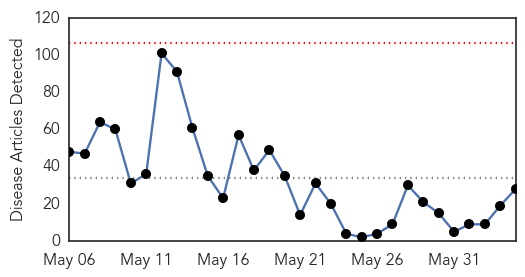
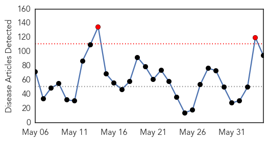
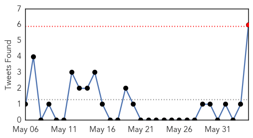
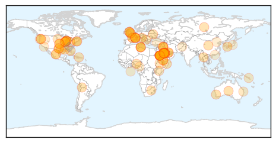
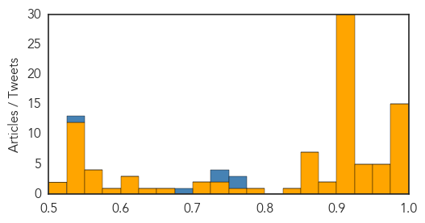

MERS
30-Day Web Trend
0 alerts, 0 warnings

30-Day Twitter Trend
1 alerts, 0 warnings

Article Locations

Article Confidences

Top Articles:
- 1.000
- Saudi Review Finds over 100 More MERS Infections — Naharnet
- 1.000
- Saudi Arabia Witnesses Major Uptick on MERS Cases
- 0.999
- Big jump in MERS cases in Saudi Arabia: Country reports 282 deaths from MERS since 2012
- 0.999
- Middle East respiratory syndrome coronavirus (MERS-CoV) – update
- 0.999
- UAE develops national Mers coronavirus plan
- 0.999
- Another Case Of MERS Infection Reported In Jordan
- 0.999
- MERS death toll in UAE hits 10
- 0.999
- Saudi review finds over 100 more MERS infections
- 0.998
- Saudi study strengthens case against camels in MERS outbreak
- 0.998
- Saudi study strengthens case against camels in MERS outbreak
- 0.998
- Saudi study strengthens case against camels in MERS outbreak
- 0.997
- Saudi study strengthens case against camels in MERS outbreak
- 0.997
- Camels confirmed as source of fatal human virus
- 0.996
- Saudi study strengthens case against camels in MERS outbreak
- 0.996
- More MERS cases cited in Saudi Arabia, Jordan
- 0.994
- Saudi MERS toll surges to 282: Ministry
- 0.994
- Mers infects 68, kills 10 in UAE Bhatkallys.com
- 0.990
- How MERS Could Topple the House of Saud, and Beyond
- 0.983
- Direct Evidence That MERS Comes From Camels
- 0.973
- Camel infection 'led to Mers death'
- 0.973
- MERS death toll surges to 282 in Saudi Arabia
- 0.958
- Review raises Saudi MERS case count 20%, death toll 48%
- 0.955
- Camels transmitted MERS to humans, but virus probably came from bats
- 0.947
- Researchers figure out way to disable a part of SARS virus
- 0.931
- Saudi Health Ministry publishes new numbers of coronavirus cases
- 0.929
- A case study shows MERS-CoV transmitted from camels to humans
- 0.886
- Saudi Health Ministry publishes new numbers of coronavirus cases
- 0.665
- PH creates task force vs infectious diseases
Top Tweets:
-
No tweets found for Jun 04, 2014
Unknown
30-Day Web Trend
2 alerts, 0 warnings

30-Day Twitter Trend
1 alerts, 0 warnings

Article Locations
Article Confidences
Top Articles:
- 0.998
- Number of MERS Virus Cases Underestimated in Saudi Arabia
- 0.998
- Saudi Arabia revises MERS death toll - World News
- 0.997
- Saudi MERS deaths jump to 282 ahead of Hajj
- 0.997
- MERS cases revealed in Saudi Arabia raise questions
- 0.996
- WHO wants details on new MERS cases
- 0.996
- Saudi Arabia Mers data review shows big jump in number of deaths
- 0.996
- WHO, experts raise questions about newly revealed Saudi MERS cases
- 0.996
- Review reveals big rise in Saudi #MERS deaths
- 0.996
- Saudi MERS Data Review Shows Big Jump In Number Of Deaths
- 0.990
- SCH taking measures to prevent Mers spread
- 0.989
- Shock at discovery of new MERS cases in Saudi Arabia
- 0.987
- Officials: Saudi MERS outbreak was much deadlier than we thought
- 0.985
- Saudi Arabia sacks minister criticised over handling of MERS
- 0.983
- Saudi MERS toll surges to 282
- 0.981
- MERS virus spreads from camels to humans, U.S. researchers find
- 0.966
- Texan Dies After Eating Contaminated "Mad Cow" Meat
- 0.962
- Saudis sack Mers minister
- 0.962
- Study documents MERS spread from camel to person
- 0.956
- Saudi MERS deaths jump on data review
- 0.955
- FMG adds extra chlorine to water after traces of bacteria from legionnaires' disease found
- 0.947
- the edge of knowledge
- 0.944
- KSA discovers 113 unrecorded MERS cases, deputy health minister sacked
- 0.943
- Fourth US death from mad cow disease confirmed in Texas
- 0.941
- Diarrhoea outbreak kills 18 children in Solomon Islands
- 0.929
- The Camel Did It: Scientists Nail Down Source Of Middle East Virus : Shots
- 0.924
- Amarillo health department: TB-infected student ignored testing requests
- 0.922
- Food Service Workers Spread Norovirus
- 0.917
- Chicago Tribune
- 0.917
- Chicago Tribune
- 0.917
- Chicago Tribune
- 0.917
- Chicago Tribune
- 0.917
- Chicago Tribune
- 0.917
- Chicago Tribune
- 0.917
- Chicago Tribune
- 0.917
- Chicago Tribune
- 0.917
- Chicago Tribune
- 0.917
- Chicago Tribune
- 0.917
- Chicago Tribune
- 0.917
- Chicago Tribune
- 0.917
- Chicago Tribune
- 0.917
- Chicago Tribune
- 0.917
- Chicago Tribune
- 0.917
- Chicago Tribune
- 0.917
- Chicago Tribune
- 0.917
- Chicago Tribune
- 0.917
- Chicago Tribune
- 0.917
- Chicago Tribune
- 0.917
- Chicago Tribune
- 0.917
- Chicago Tribune
- 0.917
- Chicago Tribune
Showing top 50 articles...
Top Tweets:
- 0.767
- Vax against MERS Spike likely best candidate than whole killed virus vaccine.
- 0.762
- MERS vax in animals seems better. Kill virus in reservoir quarantine sick people.
- 0.742
- .entry for SARS show no virus is replicated and cells fine. MERS we dont know yet.
- 0.728
- RT: Globally 681 lab-confirmed cases of MERS infection incl 204 deaths have officially been reported to WHO
- 0.689
- If you have the flu delay your travel plans until your fever has been gone for 24 hrs w/o using fever reducing meds. WorldCup2014 Brazil
- 0.536
- Thanks Michaeleen. And good catch Steve. RNA not DNA genome of the virus.